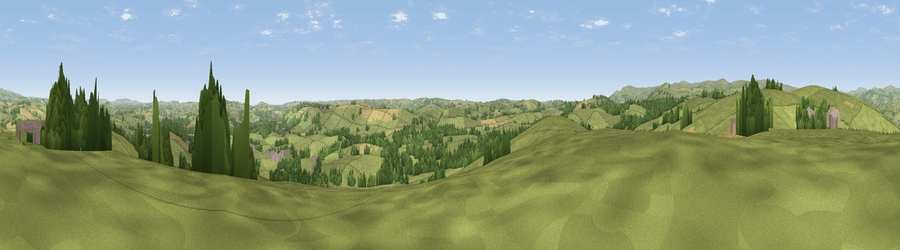

Viewpoint near Rattery
#14696 in England · top 32% of its area beats it · near RatteryThe view, rendered

A 360° render of this exact spot computed from the terrain model, tree cover and land cover — summer colours, afternoon light, calibrated against photographs of famous viewpoints. Real trees, hedges and buildings will differ in detail.
The panorama
Grey silhouette: terrain skyline in each direction (720 bearings, Earth curvature and refraction included). Dashed green: skyline with trees (+15 m) and buildings (+8 m) as obstacles. Blue strip: how far the ground is visible on each bearing.
Where the view opens
Wedge length = distance to the farthest visible ground on that bearing (vegetation-aware). Rings at 10, 25 and 50 km.
What fills the view
73% grassland · 17% woodland · 8% cropland · 1% built-up
Angular shares of the visible panorama (visual magnitude), not map area. Landscape diversity 0.35 (0–1 Shannon).
Key numbers
More beautiful places nearby
The staircase of upgrades: each row has a higher view potential than everything closer. Driving times are estimates from straight-line distance, calibrated against real road routing — check an actual route before setting out.
| Place | Direction | Drive | Score |
|---|---|---|---|
| Viewpoint near Rattery | NW · 1 km | ~3 min | 69.1 |
| Brent Hill | W · 5 km | ~11 min | 79.3 |
| Ugborough Beacon | WSW · 9 km | ~18 min | 79.5 |
| Beacon Hill | E · 10 km | ~20 min | 82.3 |
| Viewpoint near Stokeinteignhead | ENE · 19 km | ~32 min | 84.1 |
| Viewpoint near Hope | SSW · 24 km | ~40 min | 84.4 |
| Viewpoint near East Prawle | S · 26 km | ~42 min | 84.6 |
| High Peak | NE · 42 km | ~62 min | 85.3 |
50.44484, -3.75373 · source: screening · position refined by local search. Computed location — check access rights before visiting.